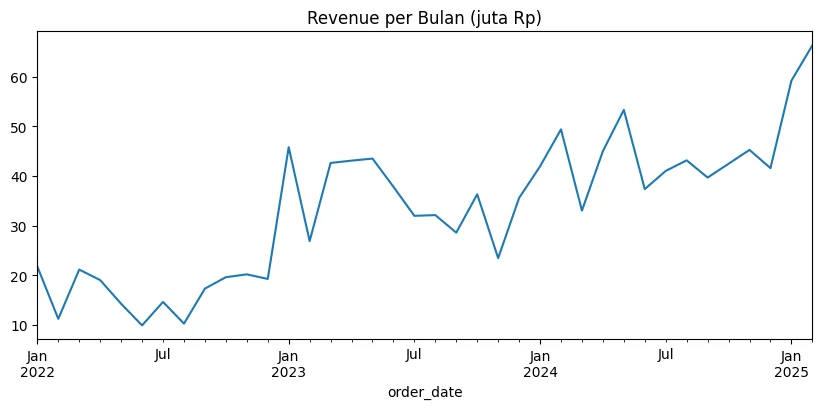

Python approach
Gayanara E-Commerce Analysis (Python)
Sales analysis of an online fashion store, from deliberately messy data to business findings.
- Rp1.27 billion revenue from 2,521 valid orders
- Promos used on 41% of orders, but those orders were about 6% smaller in value
- 16% of orders failed, highest with J&T and OVO
- Python
- Pandas
- Matplotlib
- Jupyter Notebook